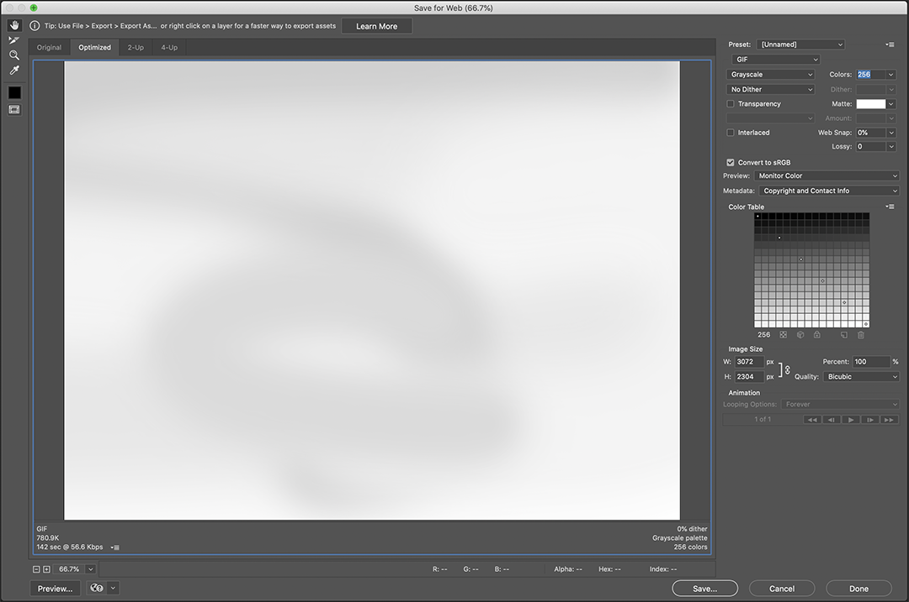
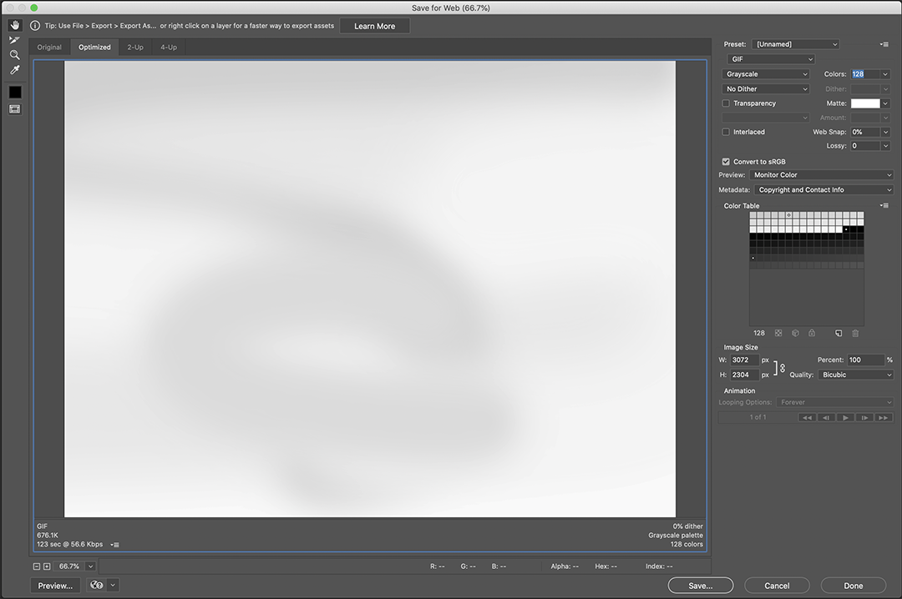
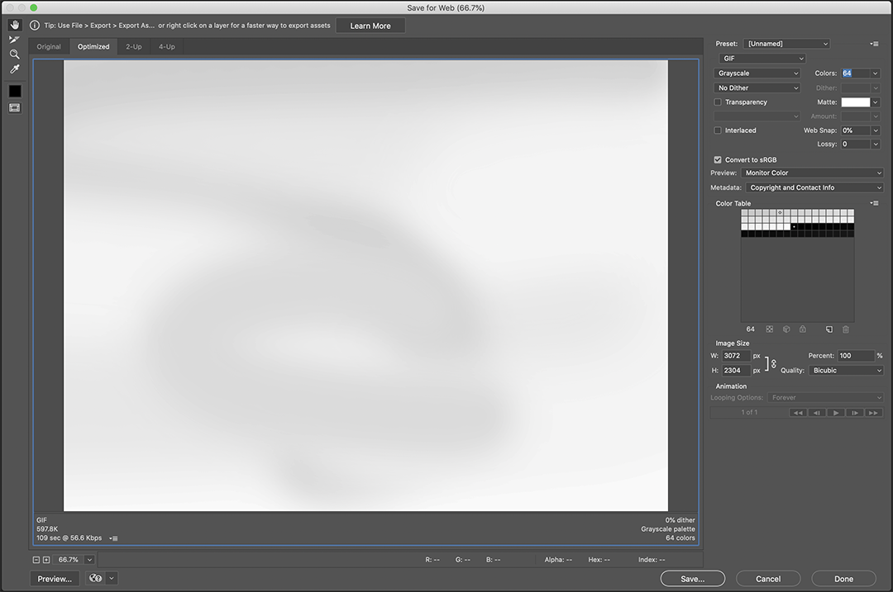
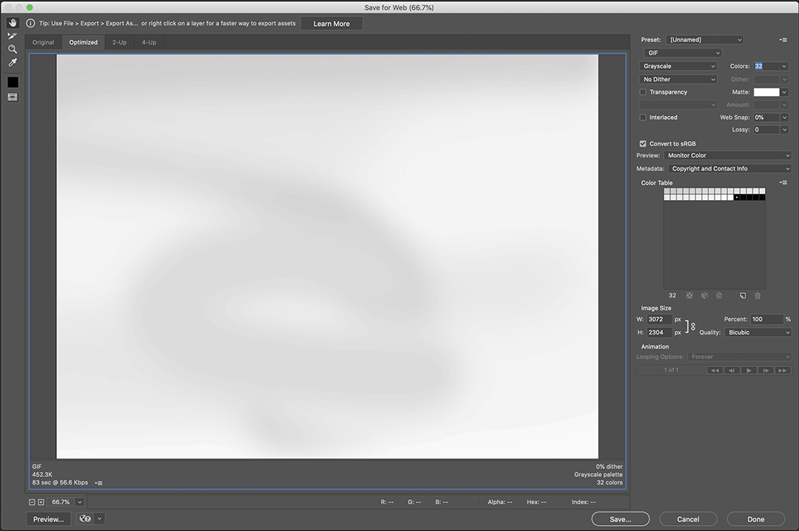
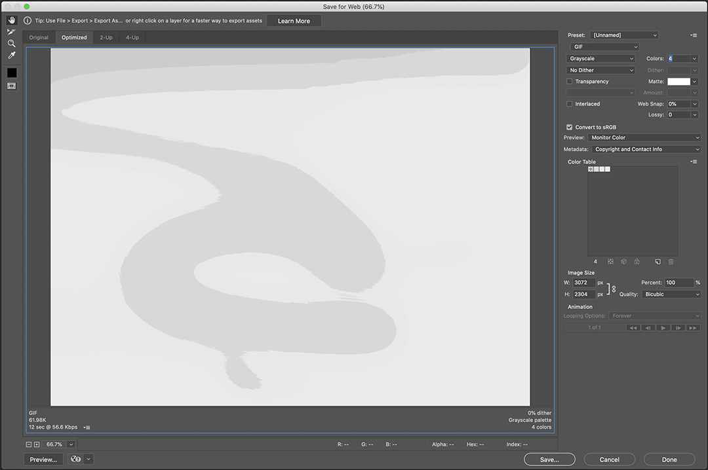
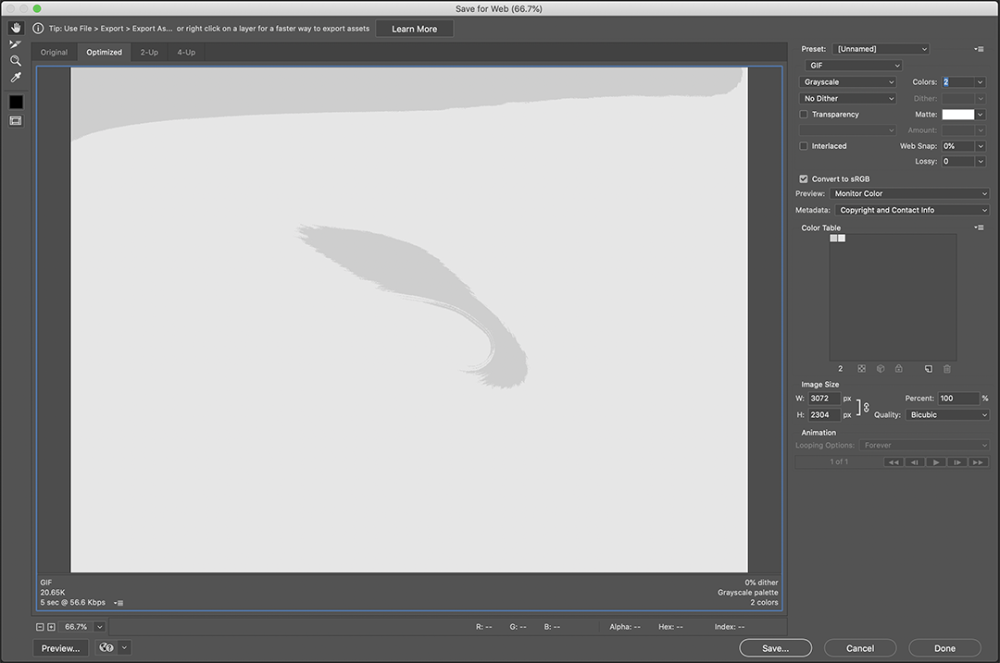
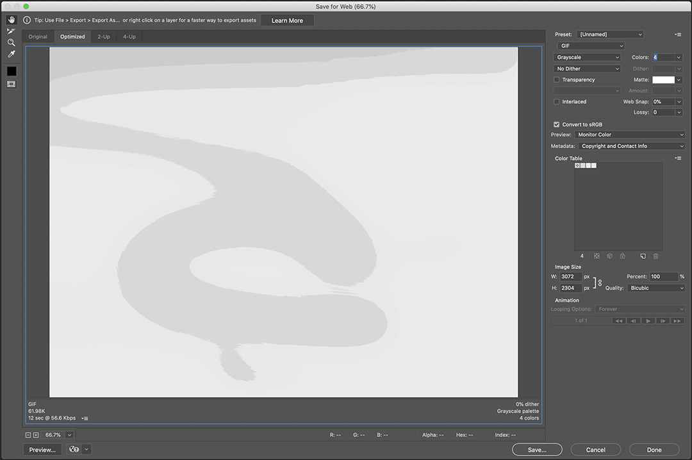
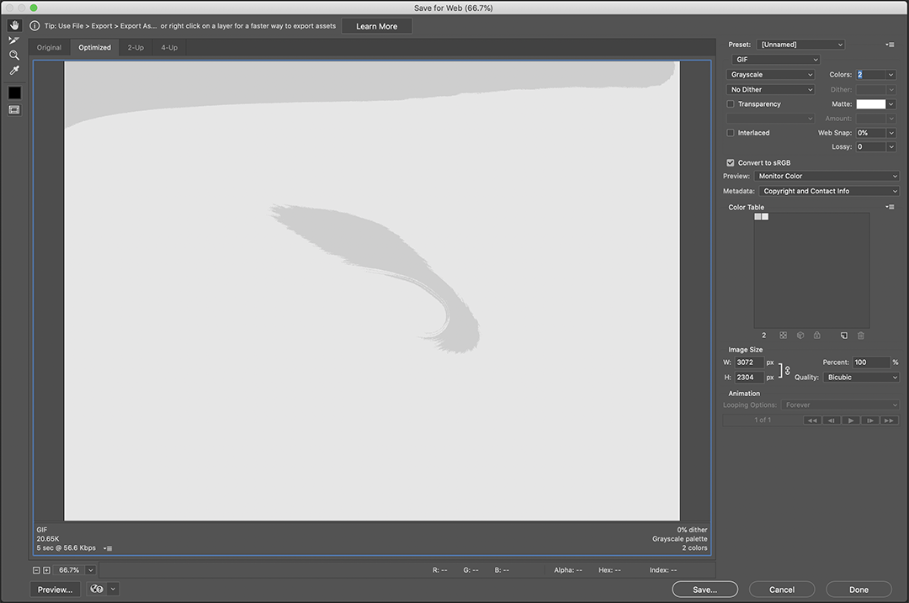
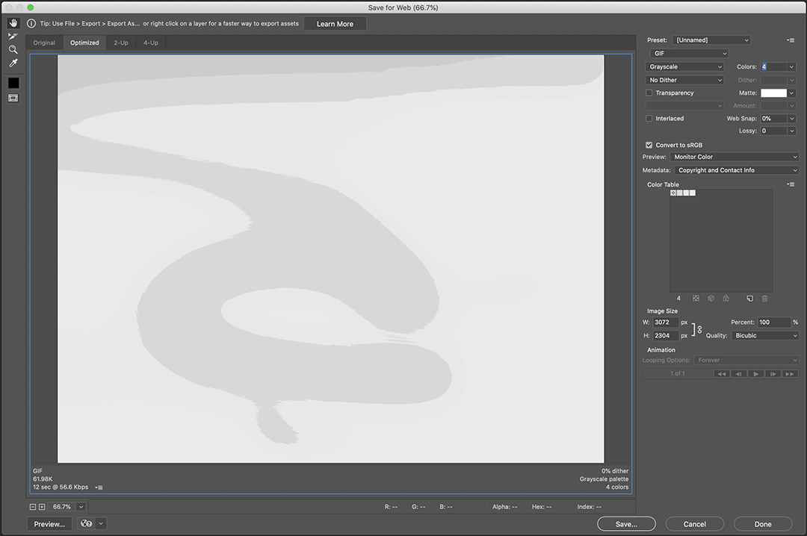
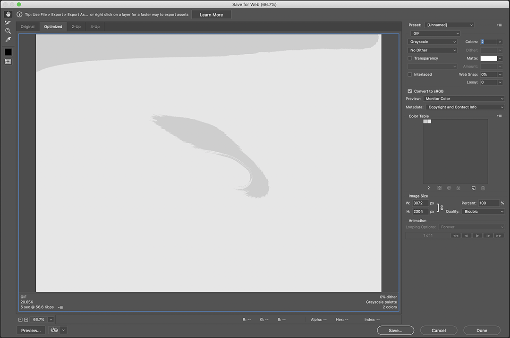

Dear reviewer:
This site simply serves for accommondating different formats of information. I put some of my researches here rather than a full picture of the reviewed work. Hope it is interesting to look at in whatever way you'd like, and feel free to email me with any questions.
Warmly,
Either I call them one kind of attention bait or information bait, internet memes are a set of data bundle,
or a set of data bomb, dropped online for attention exploding.
Images are the outputs of energetic processes defined by signalizaiton, the highly regulated
system translates any input content to a homogenous media data type and eventually turns everything into
a mathematical computation. The computation ability simplifies the variables in different input content
but calculate and structure them in the single standardized system. In a way, in this media system
images are sorted no more by content type but data volume.
GIF is palette-based: the colors used in an image (a frame) in the file have their RGB values defined in
a palette table that can hold up to 256 entries, and the data for the image refer to the colors by their
indices (0–255) in the palette table. The color definitions in the palette can be drawn from a color
space of millions of shades (224 shades, 8 bits for each primary), but the maximum number of colors a
frame can use is 256. This limitation seemed reasonable when GIF was developed because few people could
afford the hardware to display more colors simultaneously. Simple graphics, line drawings, cartoons, and
grey-scale photographs typically need fewer than 256 colors.






True color JPG (below)
256 color GIF
128 color GIF
64 color GIF
32 color GIF
16 color GIF
8 color GIF
4 color GIF
2 color GIF
A digital camera can increase its sensitivity to light by amplifying the electronic signal; as a result,
the higher the ISO sensitivity, the more obvious the effects of “noise” on your photographs.
Image “noise”, resulted by some “unwanted signals” on digital cameras or sensors, is the inherent
character of the electrical fluctuation—as long as there is electricity circuit running through. “Noise
reduction” then, works in the process of examining the standing fluctuation in signals and weeding them
off. It’s a most generic discriminator for handling digital images as one attempts to wipe out its
intrinsic character of being an electronic.
An organism's phenotype results from two basic factors: the expression of an organism's genetic code, or
its genotype, and the influence of environmental factors. Both factors may interact, further affecting
phenotype.
Geneticist Adam Rutherford wrote in his latest publication in mid 2020, the phrases we use to describe
“race” today are poor scientific designations for the immense diversity within these billions of people.
It is an irony that we roughly know what these descriptors mean colloquially while they are potentially
incoherent in terms of scientific taxonomy.
More often than not, the descriptor that stands for a group of people or a “race”, the naming and the
capitalization it carries is deeply culturally described rather than scientific significance. Even the
word “race” itself, the scientist had to use it in his book because of its public acceptance regardless
of its scientific validity.
The project here is not a move to reflect on the attitudes regarding the way capitalization--or lack
thereof--on “race”, like the scientist does; rather, I invite you to take a quiet look at the miraculous
diversity of organisms on the faces by taking them out from any established cultural envelopes, to purly
consider
how the human phenotype is shaped from the pathways of genetic codes and the influence of environmental
factors.
The Statute of Anne successfully reclaimed the identity and rights of authors in an early modern era, but
also essentially divorced the author from the art work. Once the artwork is finished by the author’s hand,
it slips into the frame of capitalization and marketization, with the publisher serving as the performative
part of the copyright mechanism, one that serves for the registered axis of commodity exchange. From then
on, the author as origin and ultimate owner of the text guards against the free will of the reader.

 

True color JPG (below)
256 color GIF
128 color GIF
64 color GIF
32 color GIF
16 color GIF
8 color GIF
4 color GIF
2 color GIF


True color JPG (below)
256 color GIF
128 color GIF
64 color GIF
32 color GIF
16 color GIF
8 color GIF
4 color GIF
2 color GIF